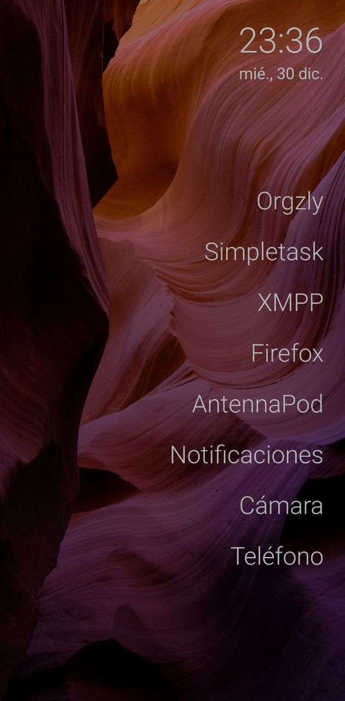

Si compras dispositivos de diferentes marcas, como pueden ser Samsung, Xiaomi, Huawei, etcétera,… es posible que vayas un poco perdido a la hora de utilizar tu dispositivo móvil, ya que las aplicaciones se muestran de un modo diferente y con iconos totalmente diferentes. Para mí esto no es práctico así que habituo utilizar launcher para unificar la experiencia en todos mis dispositivos.

Los launcher son unas aplicaciones disponibles en los dispositivos Android, que permiten personalizar y lanzar las aplicaciones de un modo diferente.
Digamos que es una especie de cómo personalizar el escritorio de tu dispositivo móvil.
Hay Launcher míticos como Nova Launcher, que te ofrecen una experiencia de usuario más parecida a Android puro.
Después hay otros muchísimos más complejos. Pero como sabéis que me encanta el software libre, voy a mostraros tres de los launchers open source que está utilizando últimamente y con cuál me decido quedar al final.
Para ser sincero, la elección va por épocas. Así que eres tú el que tiene la última palabra, y qué tipo de launcher quieres utilizar.
Aunque un poco desactualizado en el momento de escribir este artículo, Lawnchair es la opción más parecida a utilizar Android puro, pero con más personalización y vitaminado.
Puedes personalizar el dock, habilitar gestos, de manera que puedes abrir aplicaciones en función de los gestos que utilices… personalizar el tamaño de los iconos. Añade una opción para instalar una pequeña extensión que te permita el deslizando hacia la derecha como sucede con Android puro, el poder ver los feeds de tu cuenta Google.
Lo que más me gusta de este launcher aparte de ser opensource, es que te permite exportar todo aquello que configures, de manera que puedes utilizarlo en otro dispositivo puedes importar esa configuración y tener ambos dispositivos exactamente igual, permitiendo el fácil uso de tu dispositivo.
Si no te gusta la capa de personalización de tu dispositivo móvil y quieres utilizar una interfaz más Android puro, esta es una gran opción.
Instalación disponible en su versión 2, únicamente en Google Play Store.
Si lo que buscas el minimalismo y centrarte únicamente en la productividad, Olauncher es tu launcher.
Actualmente es el launcher que estoy utilizando y la verdad es que me he acostumbrado bastante rápido a él.
Es un poco diferente ya que no vamos a poder ver iconos como sucede con la gran mayoría de los launchers, pero por otra parte te permite el poder centrarte exclusivamente a utilizar aquellas aplicaciones que realmente utiliza.
Cuando lleves una semana, te darás cuenta de que solo utilizas un 5% de las aplicaciones que tienes instaladas en tu dispositivo, de manera que puedes desinstalar aquellas aplicaciones que no utilizas ahorrando, espacio y batería.
Pero vamos a centrarnos en el funcionamiento de este launcher y qué ventajas trae respecto a otras alternativas.
De salida solo te permite mostrar un máximo de 8 aplicaciones en la pantalla principal. Esto significa que tendrás que descartar un gran número de aplicaciones que tengas instaladas y decidir cuáles son realmente las 8 más importantes. Hay que tener en cuenta que el desarrollador ha ampliado hasta 8, en versiones anteriores recuerdo que estaba del orden de las tres a cinco aplicaciones.
Estas aplicaciones se mostraran solo con texto, nada de iconos.
Pero… ¿Qué sucede con el resto de aplicaciones?. Deslizando hacia arriba con el dedo, abrirá el equivalente a abrir el cajón de aplicaciones, pero todas estas aplicaciones aparecerán en formato texto, o sea el nombre de la aplicación. Nada de iconos.
En la parte inferior se abrirá también el teclado, de manera que tal como vayamos escribiendo el nombre de la aplicación, ir a filtrando Olauncher todas las aplicaciones que tenemos y cuando coincida las letras que estamos introduciendo con la aplicación que buscamos, se abrirá esta de forma automática.
Vámos, que en lugar de recordar las imágenes de los iconos, tendrás que recordar el nombre de la aplicación. De salida parece complejo, pero os puedo asegurar que el uso de este modo de lanzar aplicaciones es muchísimo más rápido que buscar un icono.
Dispone de 4 gestos personalizables. Por defecto si deslizas a la izquierda o derecha se abre la aplicación de llamadas de teléfono y la cámara de fotos.
Pero como comento, es totalmente personalizable. En mi caso he añadido la aplicación Feedme para acceder a FreshRSS y deslizando de derecha izquierda, abre la aplicación de Plus Messenger.
La opción de teléfono y cámara las he puesto entre las 8 aplicaciones más utilizadas en la pantalla principal.
Si deslizas hacia abajo, se despliega la barra de notificaciones.
Cómo puedes imaginar, este lanzador lo que permite es tener una pantalla totalmente limpia con únicamente las 8 aplicaciones que comentaba al principio la hora y fecha. Las 8 aplicaciones podemos ponerlas a la parte izquierda o derecha de la pantalla. Todo el rato hablo de eso aplicaciones, pero esto es totalmente personalizable. Esto quiere decir que si solo quieres utilizar dos tres o cinco puedes hacerlo también.
Finalmente dos características que me parecen también bastante interesantes.
Permitiendo el acceso a Internet a este launcher, existe la posibilidad de descargar un fondo de escritorio diferente cada día.
También dispone de la opción, que mediante un doble toque en pantalla, bloquee el dispositivo. De esta manera no será necesario esperar al tiempo de bloqueo de pantalla o pulsar el botón de bloqueo.
Se me olvidaba que este launcher, como puedes imaginar, no permite utilizar widget.
La instalación está disponible en f-droid y Play Store
Otro concepto totalmente diferente de launcher. Este Launcher se basa en que todas las notificaciones que va recibiendo tu dispositivo móvil, aparecen en el la pantalla de escritorio y y tú mediante un gesto de izquierda a derecha o derecha izquierda vas quitando estas.
El punto positivo de este launcher es que te garantiza que no vas a perder ninguna de las notificaciones que recibas.
Es bastante personalizable y permite el añadir fuentes de RSS, de manera que entre medio de las notificaciones recibirás noticias o publicaciones de tus blogs favoritos.
También permite poder exportar toda configuración te hagas y de esta manera, poder importarlo en otro dispositivo.
Respecto a la versión anterior que utilicé hace unos meses, ha evolucionado mucho. Pero en esta última versión he visto que tenía un poco de lag. Es un proyecto muy interesante y hay que darle un poco de tiempo a que avance su desarrollo.
Instalación disponible en f-droid y Google Play Store.
En este punto de madurez del sistema operativo Android, como puedes ver, hay muchas alternativas de launchers opensource y ya no es necesario utilizar exclusivamente la capa de personalización que trae por defecto el dispositivo comprado de fábrica.
Publicado por Angel el miércoles 30 diciembre del 2020
También te puede interesar:
Powered by org-bash-blog
Writing in orgmode whith emacs

Este obra está bajo una licencia de Creative Commons Reconocimiento-NoComercial-CompartirIgual 4.0 Internacional.